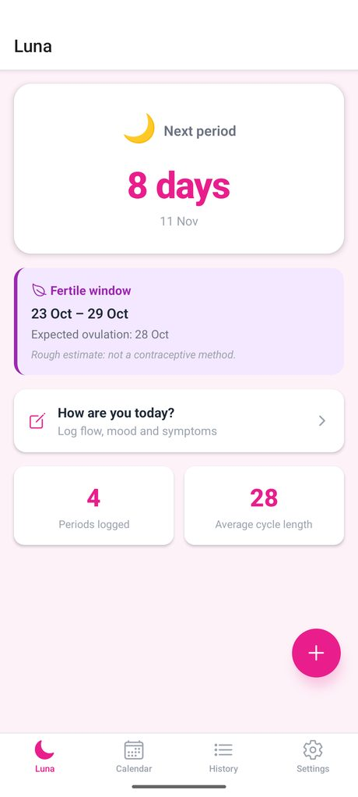
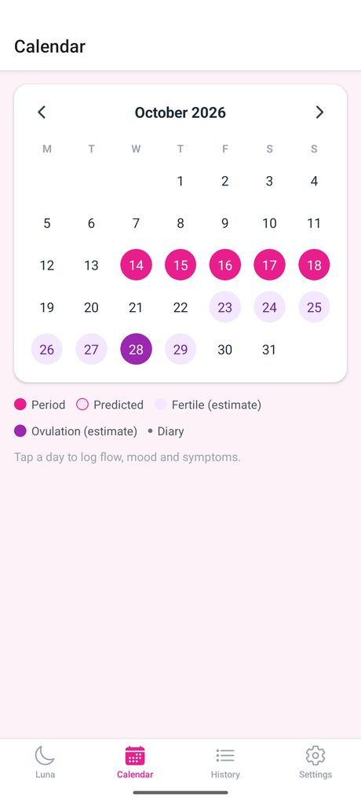
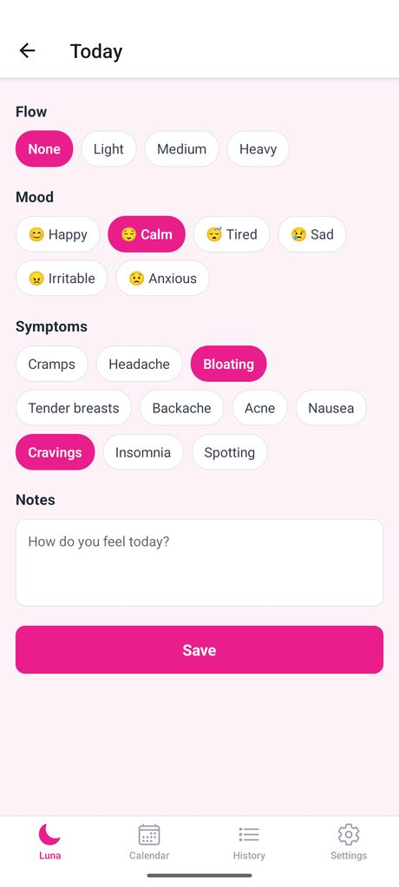

Your cycle at a glance
Cycle day, days to the next one, calendar and diary. You log start and end, Luna forecasts the rest and reminds you 3 days ahead.



A diary, not a questionnaire
Each day you note only what you want. Try tapping the items.
Flow
Mood
Symptoms
Truly private
📱✕☁️
PIN lock, also when you return from the background
- No account, no cloud: data never leaves your phone.
- Backup exportable as text, restore whenever you like.
- Works offline. In 6 languages.
Estimates, including the fertile window, are indicative: Luna is not a contraceptive method or medical advice.